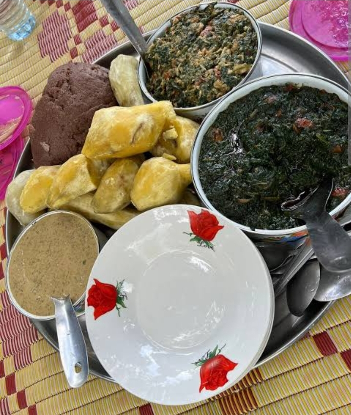

Signature Dishes

Alayo
A bitter deep-green vegetable leaves slow-cooked in groundnut paste served with posho– a Lango delicacy.

Agira
Creamy crushed-peanut,greens and moo yao served with millet bread,sweet potatoes and cassava.

Variety
Locally sourced greens known as 'boyo' with White-ant paste carefully pounded to the local delicacy. The different sauces form a perfect combination with 'Kwonkal' and sweet potatoes respectively.